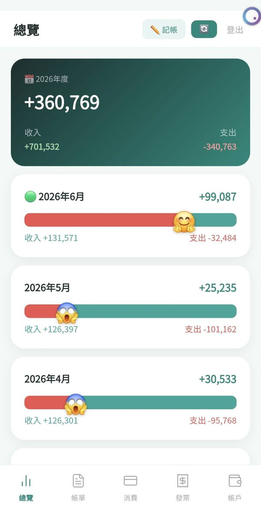
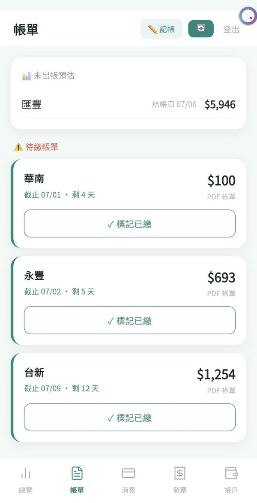
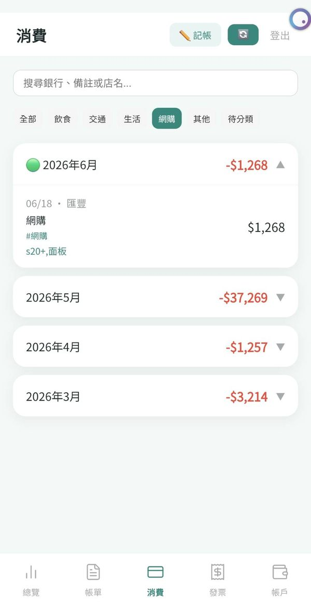
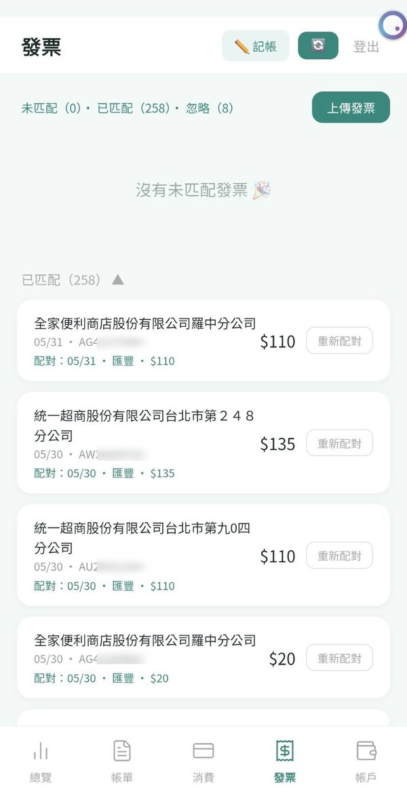

上線中
髮線追蹤
Hairline Tracker 健康記錄每天拍一張，自動對齊追蹤髮際線與頭頂的變化，還能做前後對比圖。照片只存在你手機、不上傳雲端，是個隱私優先的髮量記錄工具。
開啟 App hairline-tracker.vercel.app →揪好算
JoinFun 分帳工具和朋友出遊、聚餐分帳，建立活動、記錄花費，自動算出誰該給誰多少。輸入邀請碼就能加入，也能用 LINE 登入解鎖推播提醒與跨裝置同步。
開啟 App jhs-app.vercel.app →T-Minus 火箭倒數
T-Minus 小遊戲經營一間太空公司，發射火箭闖過 8 大行星、68 個關卡的太空倒數遊戲。多種玩法、道具與排行榜，一場接一場停不下來。
開始遊玩 t-minus-black.vercel.app →開發中
您真有錢
記帳工具 開發中個人記帳工具。未來用 Google 登入後，會一鍵在你自己的雲端建立表格、從你的 Gmail 自動整理消費紀錄——資料完全留在你自己手上，不經過開發者。



